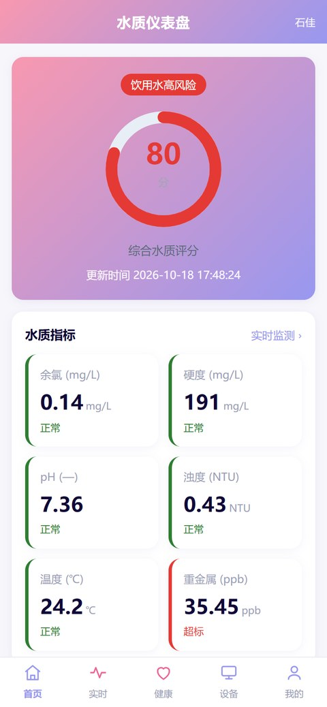
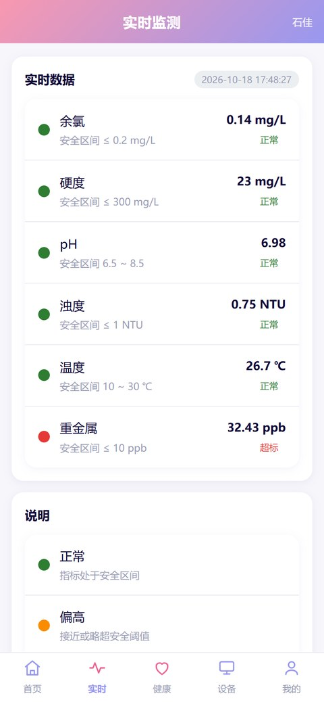
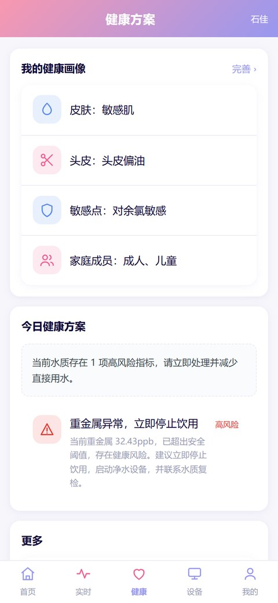
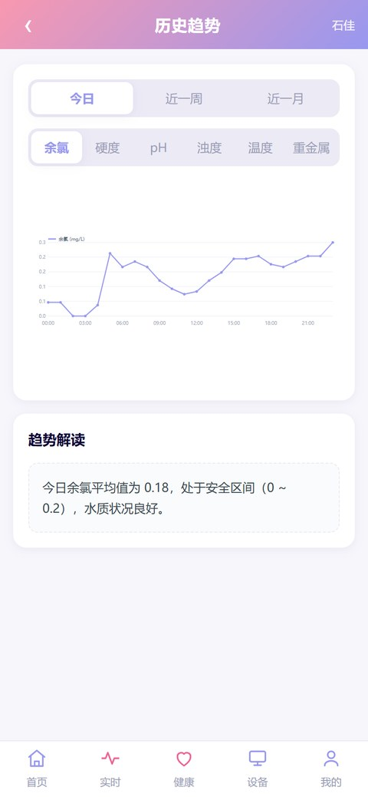

文档概览Overview
| 版本Version | V1.0 |
|---|---|
| 产品名称Product | 移动应用 + 物联网云平台Mobile App + IoT Cloud Platform |
| 定位Positioning | 面向家庭的便携式水质监测与个性化健康管理Portable home water monitoring + personalized health management |
| 目标用户Users | 自住房家庭 / 租房宿舍 / 母婴家庭 / 差旅人群Homeowners / renters / infant families / travelers |
| 状态Status | 待评审Pending review |
产品目标Product goals
看得见See
随时查看多指标、实时、历史水质数据。Real-time & historical multi-metric data on demand.
看得懂Understand
把指标翻译成对皮肤/头发/身体的健康影响。Translate metrics into skin/hair/body health impact.
做得了Act
个性化方案 + 联动净水/软水设备自动处理。Personalized plan + auto-linked water treatment.
硬件终端形态Hardware forms
产品采用“便携款”与“旗舰家用款”双形态终端，分别覆盖“外出便携”与“家庭全屋”两类核心场景，与上述“监测—分析—预警—处理”闭环配套。Two hardware forms — a portable unit and a flagship home unit — cover both on-the-go and whole-home scenarios, paired with the monitor–analyze–alert–resolve loop.


功能清单 · 移动应用（软著 1，11 模块）Features · App (SC #1, 11 modules)
| ## | 模块Module | 说明Description | 优先级Priority |
|---|---|---|---|
| 1 | 登录/注册Auth | 本地账号，数据存于本机浏览器Local account, stored in-browser | P0 |
| 2 | 水质仪表盘Dashboard | 综合评分（红黄绿）+ 六项指标卡片Composite score + 6 metric cards | P0 |
| 3 | 实时监测Realtime | 定时刷新，达标状态一目了然Periodic refresh, clear pass/fail | P0 |
| 4 | 历史趋势Trends | 日/周/月折线图，可切换指标Day/week/month line charts | P0 |
| 5 | 健康画像Profile | 皮肤/头皮/敏感点/家庭成员录入Skin/scalp/sensitivity/family | P0 |
| 6 | 健康方案Advice | 指标超标 + 画像 → 个性化建议Over-limit + profile → advice | P0 |
| 7 | 异常预警Alerts | 分级预警（高风险/提示）+ 记录Tiered alerts + history | P0 |
| 8 | 设备管理Devices | 监测设备绑定/解绑/在线状态Bind/unbind, online status | P1 |
| 9 | 设备联动Linkage | 净水/软水/龙头手动与自动联动Manual & auto control | P1 |
| 10 | 健康报告Report | 周报/月报生成，复制/打印导出Weekly/monthly, export | P1 |
| 11 | 系统设置Settings | 通知/数据清除/隐私/退出Notifs, clear data, privacy, logout | P1 |
核心界面预览Core screens
以下为可交互演示 Demo 的实际界面截图，对应上表中 P0 优先级的核心模块。Actual screenshots from the interactive demo, matching the P0 modules above.

综合评分 + 六项指标Composite score + 6 metrics

定时刷新、达标状态Periodic refresh, pass/fail

画像 + 指标 → 建议Profile + metrics → advice

日 / 周 / 月折线Day / week / month lines
物联网云平台（软著 2）IoT Cloud Platform (SC #2)
| 能力Capability | 说明Description |
|---|---|
| 设备接入Ingest | MQTT 3.1.1 Broker（TCP 1883 + WebSocket），主题 home/water/<metricKey>MQTT 3.1.1 broker, topic home/water/<metricKey> |
| REST APIREST API | GET /api/water/current · /history · /devices · /linkage · POST /linkage/:id/control |
| 数据存储Storage | JSON 文件持久化 + 内存缓存JSON file + memory cache |
| 边缘计算Edge logic | 三档阈值判定（safe/warn/danger），接入即时本地判定3-tier threshold at ingest |
| 健康分析Health engine | 指标 + 画像 → 个性化建议（规则引擎）Rule-based personalized advice |
| 数据安全Security | 口令哈希 + AES 数据加密Password hash + AES encryption |
信息架构Information architecture
首页Home
- 水质仪表盘Dashboard
- 历史趋势Trends
- 异常预警Alerts
实时Realtime
- 实时监测Realtime monitor
健康Health
- 健康画像Profile
- 健康方案Advice
- 健康报告Report
设备Devices
- 设备管理Manage
- 设备联动Linkage
我的Me
- 系统设置Settings
核心业务规则Core business rules
三档阈值判定Three-tier threshold
每项指标定义 safe（绿）/ warn（黄）/ danger（红）三档，驱动仪表盘评分颜色、预警分级、联动触发。⚠️ 改阈值需同步更新前端与后端的 METRICS。Each metric has safe/warn/danger tiers driving score color, alert level, and linkage. ⚠️ Changing a threshold updates both frontend & backend METRICS.
safe · 正常safe · normal
指标在安全区间内，绿色显示，无需处理。Within safe range, shown green.
warn · 提示warn · advisory
接近或略超阈值，黄色提示，建议关注。Near or over threshold, yellow advisory.
danger · 高风险danger · high-risk
明显超标，红色预警并触发联动处理。Clearly over, red alert + linkage.
健康画像 → 个性化方案Profile → personalized plan
示例规则：余氯超标 + 敏感肌 → “洗漱前放水 30s + 使用除氯花洒”。Example rule: high chlorine + sensitive skin → “flush 30s + chlorine-filtering shower head”.
分级预警Tiered alerts
区分“饮用水高风险”（立即停用提醒）与“生活用水提示”（建议性）。Distinguish “drinking high-risk” (stop now) from “household advisory”.
应用场景 · 核心流程Scenario flows
围绕“监测—分析—预警—处理”闭环，双形态终端分别落地到两个核心场景：家庭用水与外出旅行。每个场景下，水质异常时触发“人机提醒 + 自动解决 + 健康建议”三路联动。The monitor–analyze–alert–resolve loop lands on two core scenarios — home and travel. On any anomaly, three tracks fire together: alert, auto-fix, and health advice.
场景一 · 家庭用水Scenario 1 · Home
场景二 · 外出旅行 / 酒店Scenario 2 · Travel / Hotel
非功能需求Non-functional requirements
| 类别Category | 要求Requirement |
|---|---|
| 性能Performance | 实时刷新延迟 < 3sRealtime refresh < 3s |
| 兼容性Compat | 移动端优先，主流浏览器，零构建零依赖Mobile-first, no build, zero deps |
| 安全Security | 口令哈希、AES 加密、本地优先存储Hash, AES, local-first |
| 可扩展Extensible | 数据源抽象（Mock/HTTP/MQTT 可切换）Swappable data sources |
已知限制与后续规划Limitations & roadmap
- 当前为 Mock 数据演示，需接入真实水质数据源Mock data today; real source needed
- 健康分析为规则引擎，后续升级 LLM + 文献知识库（RAG）Rule engine → LLM + RAG later
- 硬件终端处于设计与选型阶段，尚未量产Hardware in design/selection, not yet produced